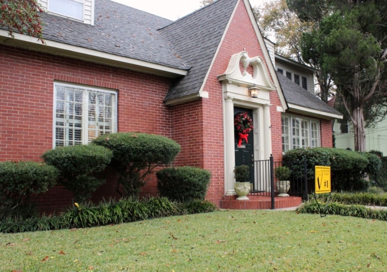

.png)
.PNG)
.PNG)
.PNG)
.PNG)
.PNG)
.JPG)
.JPG)
.PNG)
.PNG)


and it was this comment with the Christmas in the dining room post :
Congratulations Lori! I will be getting in touch with you soon so that I can get your gift card right out to you. For everyone else, please be sure you read to the bottom of today’s post for a little Christmas surprise. 🙂 And now let’s get to our topic at hand.
Another of my favorite things around the holidays is the many open houses and home tours that showcase beautifully decorated rooms. Sunday afternoon my husband, my mother, and I went on one such tour in the historic Vineville district of Macon, Georgia. It was misting rain the entire time, but we still enjoyed seeing these old homes decorated for Christmas. Here are a few pictures I took just for you.
Stop number 1 was built in 1928.

The rooms in it had a somewhat formal feel to them.
 I thought the window area in the kitchen was pretty.
I thought the window area in the kitchen was pretty.
Stop number 2 was the house that made me choose to go on this tour. For many years, I had noticed one particular home on Vineville Avenue. The entire front wall was made of windows, and when we would ride by at night, the rooms inside just glowed. I loved it, and I couldn’t believe it when I learned that this home was going to be on the tour!
The home was built in 1915 but has obviously been renovated since then.
My mother’s favorite rooms on the tour were the bedrooms in this home.
Earlier last week, some students from the nearby St. Peter Claver Catholic School took a “sneak peek” tour of the house. Here is a video clip if you would like to see a few more rooms in it.
I did not take any more interior photos until the very last house, but here are a few of some of the exteriors.
There is also a sneak peek video tour of the home above here.
I loved the vines over the door at this front entrance on another house.
And now for my favorite home on the tour…stop number 9 (the grand finale.) 🙂
Here is a better look at that front window.
Now wander around to the wonderful side yard.
And wouldn’t you love to sit out here beside this fireplace?
The home owner did the series of paintings of the four seasons here.
Now let’s go inside to see some of the rooms. Here is the living room…
and the kitchen…and my final favorite…the bathroom.
Isn’t it pretty?
We saw 4 houses on the tour early in the afternoon, but we had to take a break mid afternoon for this…
That is our daughter in front of “Jack Sparrow.” She is part of a charity organization that does princess appearances at various events, and this was their float in the Macon Christmas parade. Have you seen the new Disney movie Frozen? Our daughter was dressed as Queen Elsa from the movie.
After the parade we finished the final 5 homes on the tour. It takes a tremendous amount of hard work to get your home ready for one of these, and it is very generous of people to agree to do it. So I am grateful that there are people who are willing to let crowds of strangers into their homes – especially when it is misting rain outside!
I am also grateful for all of you. I know many of you, like me, are busy decorating your home for Christmas, cooking treats for friends and family members, and buying gifts – and yet you make time to visit here. So I am having another giveaway for you. This time, I want to give away a $25 gift card to Pottery Barn to one of you. Pottery Barn is my very favorite place to shop, so I hope the winner loves PB as much as I do. 🙂
Once again, just leave a comment on one or all of the posts that publish between 12/10/13 and midnight 12/15/2013 12/16/2013 to be entered. There will be a random drawing after midnight next Sunday night. Good luck!
I will leave you with another question to talk about to get you started:
Most of the homes we saw on the tour had a number of Christmas trees. How many trees do you decorate for Christmas and in what room(s) do you place your tree(s)?
As always, I am looking forward to your comments!


.PNG)
Thank you for the home tour. I enjoy following your blog. Thank you for sharing.
Thank you for sharing the house tour photos! We have our tree in the living room, where its white twinkle lights shine thru the bay window. We also have a smaller tree, with only lights and no decorations, in the sunroom. I like having a lit tree in the front and in the back of the house.
Carol
I honestly could spend every single day going to house tours! Just beautiful! I pinned a few and now I want to decorate my house even more! Normally we have one main “family” tree but sometimes I pull out an extra one to decorate with “my” stuff!
-Shelley
That is interesting what your daughter does. She makes a pretty princess 🙂
I’m enjoying all your posts!! I will agree with those Strawberry Salad people, too! Yummy stuff 🙂
Love the homes, they all seemed very cozy and inviting. House tours are so much fun, aren’t they? How wonderful of your daughter and the other volunteers, they all look spectacular. They must bring a lot of happiness to many children. I have heard so many good things about Frozen that I think I must go and see it! (I’m lucky to get one tree up and decorated, but some years I also put up a little table top tree, either on the dining room buffet or on the stairway landing.)
Great post Kelly! We usually have at least 3 Christmas trees decorated in our home. We have a 7ft tree in our living room that has all our Hallmark ornaments and Christmas balls beginning with when we were married 27 years ago. It’s also decorated with German style candle holders with red candles and real popcorn garland (that I save year to year). We have a slim 7ft tree with a wood trunk in our family room. It has homemade gingerbread men, metal Longaberger Santa and Basket ornaments, candle Christmas lights, old fashioned tin icicles and wood bead garland. The last tree is very small and sits on a sideboard in our kitchen. It’s decorated with all handmade ornaments that I made years ago. The ornaments vary…some are made from bread cut with cookie cutters and dipped in wax, thin slices of wood with Santa faces painted on them, cinnamon sticks painted with Santa faces and cinnamon applesauce cookie cutter ornaments.
As a resident of Atlanta I always enjoy the sights that are in and near this area. Thanks for all you do on this blog. Such a treat for me to read at the end of a long day.
Thanks for the tours Kelly…so many beautifully decorated homes!…Until a couple of years ago, my home used to be on tour for charity..I loved doing it but it is lots of work…but very rewarding!…
I have really enjoyed your blog. I discovered it a few weeks ago. I love your style. It is so warm and welcoming. I loved the house tour. We have not had one in our area for a few years.
Beautiful inspirations. I am going to get some grapevine wreaths for my windows. Thank you
I love Christmas and I love Pottery Barn!
I also love home tours at Christmas. My Dad is 96 and went to the nursing home this year so I cut back on decorating this year due to caring for him. I have two full size trees and several small ones. I enjoy the process of decorating and puttering with the decorations the whole month of December. Love your blog, Kelly!
We used to put up one big tree that we grew on our small farm. Now it is one tall prelit tree for just hubby and I. Almost fell off the ladder this year putting the angel on top. Think it may be time to change again to a smaller tree. Would love the PB gift, have a store about 2 hours from here.
I loved the tour of homes! I may have to check them out! Macon is not too far from me!
I have one main Christmas tree in my sunroom and two more small trees in the dining room and bedroom.
I would LOVE to win the gift card to Pottery Barn (after Christmas sales!) Thanks for the opportunity to win!
I loved seeing all these beautiful homes via your post. We went on the tour of homes again in Madison last week, and as always, it inspired me to come home and get busy. I think my favorites you showed are the second and last ones. I REALLY like that porch/fireplace. Ahhhh! So about the trees…I always decorate one for our living/family room. And this year, I also have a miniature one in the kitchen that holds all my sweet little vintage homemaking/baking ornaments. It makes me happy!
Great post and awesome give-away!
Blessings,
Amy
Loved this tour…and all of the homes in it! Thanks so much for sharing!
Love the home tour, but can I just tell you YOURS is STILL my favorite????? Now, on to your question. As a military family we have lived in some tiny homes. So when they came out with the slim tree I was thrilled! I wouldn’t have to rearrange my entire tiny house to fit a Christmas Tree I just knew at the tree lot would fit!! The slim tree looked “primitive” and “country” to me and secretly between you and me 😉 every time I walk by my tree I tell it how much in love with it I am. Now we own the house we currently live in and I have 4 smaller trees and my beloved slim and another larger tree I picked up at a neighbors yard sale. I have been able to decorate trees in several of our rooms………and they all look pretty. But I still love that slim tree!!! Merry Christmas!!!!
Hi Kelly, I grew up in Macon but now live in Peachtree City. I like you had always
noticed the house on Vineville Ave. with all the windows so when I saw the home
would be on tour I immediately called my Mother to purchase the tickets.
I was thrilled to see the inside and especially loved the dining room . I
decorate 1 tree in our family room. It is decorated with keepsake ornaments that I have collected over the years!
We decorate 2 trees. One traditional tree in our living room with ornaments collected over our lifetimes and the other is a small “family tree” in our entrance hall that is covered in ornaments with pictures of all our family members and pets!
Hi Kelly,
I love reading your blog and enjoy your decorating style!
I love the home tours and enjoyed this one very much. So much fun to see how other people live and decorate for the holidays.
I only decorate with one tree. This year I put up a white pencil tree and love it. So bright and sparkling with all of our Christmas bulbs and ornaments. Thank you for the opportunity to win. I too am a big fan of Pottery Barn!
I have one large tree in the family room, but may add another small one next year. Beautiful pictures! Thanks for sharing!
Always enjoy your blog and seeing your home – great taste!! I usually have 2 trees, but this year we only have one – a gingerbread-theme tree. Would love a Pottery Barn gift card. Merry Christmas!!
Wow — what beautiful homes. Thanks for sharing them Kelly! You will find our traditional Christmas tree in the living room. I have one other small tree in the kitchen given to me by a friend. It is filled with mini ornaments and origami Christmas trees!
Surely enjoyed the parade of homes– truly loved the first one– looked like it could be “anyone’s grandma’s” formal living room. Was this in your town or Macon? I’ve always wanted to go on one of these tours but have never. Enjoyed seeing the parade float with your beautiful daughter as the snow princess–what a great way for the young people to play it forward helping others by being special characters. I want to see Frozen!! I only have one main tree in the living room since we have down sized. Used to have one in every room– even the bathrooms!! Maybe too many?! 🙂 Hoping you will one day soon get to go for that one horse open red sleigh ride!! Merry Christmas!!
Thank you for sharing the tour. We have two trees, one in the family room and the other in our daughter’s room. Thank you for the giveaway. I LOVE Pottery Barn.
How fun! I would’ve loved to have gone to the Macon parade and the home tours. That second house…the one with all those beautiful windows is my favorite and I too notice it when I have driven by it as well! Thanks for the chance to win a PB card! I would love to win since I am wanting to order some ornaments!!
How exciting! Thank you Kelly! What a nice Christmas surprise. 🙂
The homes you shared from the tour are wonderful.
Oh how I LOVE Christmas trees. We have a large tree in the living room, each of our kiddos have a tree in their rooms, I have smaller trees in the kitchen and master bedroom and then one tiny tree with the nativity.
Just like going on the tour myself. Thanks!
How exciting, I love, love, love Pottery Barn; thank you so much for your gift of giving. The tour of homes looked beautiful. A friend and I decided not to go because of the weather; it appears I missed a special treat. I am still decorating as most educators are with school still in session. I love a house where the Christmas can be seen from the road, so I have one tree in the dining room done all in white; I have a 12 foot tree in the great room; and I have a real tree in honor of my husband done all in blue to symbolize I’ll have a blue Christmas without you in the sunroom. How many trees do you have?
Our home was on a tour in Pella IA in 1994, what an experience! The Pella Garden Club decorated our entire home and put us up for the night in a hotel between the 2 days. We woke up to 4″ of snow on Friday, needless to say the house looked great in the snow, but the expected 2000 visitors were cut down drastically…our carpet appreciated it!
When we had our larger home we did decorate three trees. These days I put up one in the living room with all of my antique ornaments!
And WS is my favorite place to shop too!
I love Christmas home tours and haven’t been on one in a long time. Those homes were beautiful! I have to agree that the last one was the best too. Thanks for the opportunity to win a gift card too! That’s a great giveaway!
Thank you so much for the tour! So many beautiful homes and fresh ideas for decorating. I have finally finished my tree today. I decided to make most of the ornaments for it this year. I hope you take a look at them over the next couple of days. I want to do a tour one day. I would love to do one in Madison, Georgia. My sister lives there and I think it is such a charming little town.
Kelly…thank you for the tour of homes. I use to go on tours of homes in our area but they don’t have them much anymore, which is a shame. I always wanted to have my preschool do a tour of homes as a fundraiser for our scholarship but couldn’t never get enough interest. I sure enjoyed viewing this post and thank you for the opportunity to win a pottery barn gift card…I love PB. Mickey
Hi Kelly: Seems like no matter how busy I am, I always make time for your blog. It lifts my spirit so and again, I so appreciate your wonderful posts. The homes in this one are beautiful. Love the warmth of all of them! We finally bought a pre-lit tree this year. My husband wanted a multi colored one but I wanted only white lights. So we compromised and got a duel control deal. When I’m gone, he does multi; when I’m home, we do white. Aren’t I the lucky one:-))) I’ll leave you to your own thoughts:-) Anyway, we just do one tree in the living room near the window. I string pretty red colored berries and sparkling stars and decorate with beautiful balls around. But baby Jesus is tucked in there to keep us focused. It’s topped with a pretty gold bow whose ribbons drap down the tree to represent God’s perfect gift of His Son to us. Thank you again for such a beautiful post.
all the houses were lovely but I liked house #2 the best. You just can’t beat all those windows!
A home tour at Christmas is so fun! We have done it a couple of times at church but seems like it is hard to plan. Those homes are beautiful. I just love to see how other people decorate. 🙂 I think I am one of a few that still just has one tree. I don’t think the small tabletop silver tree in my living room really counts. 😉
Kelly,
What a fun home tour. I liked the last house best too, on the inside. My favorite exterior shot was the white house with black shutters. I enjoyed listening to the video of the family home where the owner had purchased his family home and renovated it. Thanks for this fun and timely tour.
xo,
Karen
Thanks for taking us on the holiday home tour! This year, since we’re renting & waiting for our new home to built, we have 2 small Christmas trees – one in our living room & one in our guest room for our granddaughter to enjoy when she stays overnight. Oh, and Pottery Barn…how I love Pottery Barn, let me count the ways…
We put up 4 big trees, and several small trees. Our family room has a 7′ tree decorated with all of my son’s handmade ornaments, and the ones we receive every year from Santa on St. Nick’s day. Upstairs we have an all snow/snowman themed tree (including a top hat for the tree topper). My dining room tree sits on the buffet and has tea cup ornaments. In the guest room, we put my mother-in-law’s childhood feather tree on the window seat, and decorate it with reproduction ornaments. It just wouldn’t be Christmas without them!
Thanks for the tour! It’s been so cold here, I haven’t left the house for 4 days! I so wanted to tour some historic homes in downtown St. Louis this past weekend, but we had bad weather.
As for our tree, it depends on whether we will have guests staying. If so, I will do a tree in the living room and family room, as well as a small tree in the guest room. But this year we will not have guests or be entertaining, so only the living room tree. Still have outdoors decorated, and small amount of decor inside, but scaled way back. Things get trickled out day by day, but I’m trying to restrain myself, so I won’t have to pack it up after the holidays.
Well, today I am finally getting around to putting up the tree in the family room. Thank you for the fun post once again. I use to attend the local Christmas Home tour years ago. It was fun but usually always very cold. Here in the Midwest it was brutal once again when they had it. It was in the teens. Oh, the South and your pretty homes along with warmer temperatures. Sigh! Well, I just want to say I love the picture of the bungalow with the porch swing and black furniture. I know why, as it reminds of the charm of your front porch. Love the patio with the fireplace as well. The outdoor fireplaces are becoming more and more popular. I would just love that patio out by our new outbuilding. Thanks for the inspire today Kelly and to Lori, congratulations.
Lovely homes and tour! I only did one tree….and am kind of wishing I could do more!!
Visiting those homes must’ve been fun. There is a Christmas Home tour too here in Leavenworth, never been to one even though I’ve lived here for 20 years. Maybe this will be the year for me to go??? We tend to have 2 trees – a large live one in our living room and a small fake one in our dining room. At our last house, there was a Christmas tree in the front yard that a previous owner planted, we loved to decorate it. I miss that tree. I ADORE Pottery Barn and would love to win a gift certificate. That is so kind and generous of you.
I could live happily in a PB store. 😉
We have only one tree and it’s in our dining room, but we can see it from many other rooms of the house in that spot.
I really enjoyed the tour of homes. I am a fan of traditional homes and the decor. That’s what we have 🙂 As for trees, we decorate a 7 ft. and a 4 ft. The large tree is in the livingroom and the smaller one travels to a different room each year. This year it is sharing the livingroom with the large tree. We don’t have theme trees -just use the ornaments that we have collected and that the children made years ago…lots of wonderful memories!
We decorate one tree and it is in our sun room which connects to our family room. Thank you for all your wonderful posts. Just love your blog!
What a beautiful tour of homes! Thank you for sharing. I put up one tree and it is in the family room.
Thanks for the chance at such a great give-a-way!
Loved the tour!!! I have trees in my dining room, den and a small tree n the bedroom. Thanks for doing your blog!! Always inspires me!!! Merry Christmas!!!
I loved the kitchen in house #9 and it’s got me thinking about my own kitchen. . .hmmm. Our house is very small so we only do one tree in the living room. I was thinking how fun it would be to have more than one. We’ve been married almost 40 years (January 5 is our 40th) and we have more ornaments than can fit on one tree.
I love the idea of trees in every room! This year, due to pregnancy and exhaustion from a 3-year-old, however, I have scaled back to just two…one in the living room and one in our daughter’s room!
I have always loved Christmas home tours. These were lovely! Thanks for showing all the beautiful homes.
I decorate the big tree and then have five smaller sizes around the house. I think each year we add one! 🙂
I enjoyed looking at everyone’s homes and getting more ideas for my home. Love Pottery Barn. What a fun job for your daughter, every girls dream! Thanks for the chance to win.
Hi Kelly. I love the last house. I could ? he right in.
I have tiny trees sitting around here and there.
I have a large tree in our Sun room. It’s in memory of my parents. They loved this tree with woodland critters on it. It has moose,bear,raccoons,deer. So man and when I go out there and see it it takes me back to Christmases past. We also have a tree in the family room. It I burgundy,cream and navy patriotic.This tree is where all the gifts will be found Christmas morning. Merry Christmas Kelly. Blessings, Becky
I decorate with two trees. A full size one in the formal living room and a small one on top of the dining room buffet. THe homes you featured today were beautiful! God bless!
I love home tours too, especially historic homes, especially at Christmas. I’m also addicted to HOUZZ! And to Pottery Barn. Did you know that Pottery Barn will actually send designers to your house to help you design your rooms, down to the paint colors?
They picked out the paint for several of my rooms as well as the curtains….for free!
(your daughter is certainly as pretty as a princess). Merry Christmas!
Kelly,
Thank you for sharing the home tour with us! I love to see how others decorate their homes. We usually put up 2 trees. We have 14 foot ceilings in our family room so that is where our 12 foot tree goes. It has white lights and silver ornaments with my precious moments ornaments spread though out. The other tree we put up is an 8 foot tree in the family room in our basement. It has colored lights and sports ornaments on it.
I love to shop Pottery Barn as well and find myself checking their on-line shopping daily this time of year. I order several gifts from them also, as we don’t have a store any where close to us. I am going to go shopping at the one on the plaza in Kansas City later on this month and that gift card would come in handy!
Kelly, thanks so much for the tour…especially loved the second one. We only have one tree…and that’s where all our family ornaments…you know, the ones the kids made….are displayed. We have little touches of Christmas all over the house…but only one tree! 😉
I put up one big tree and one small tree. I love Pottery Barn! It is my all time favorite store and I love getting their catalogs to look at. So much inspiration!
I enjoy home tours as well. We have several trees. A large Frasier Fir in the family room, one in the living room and a small one in our bedroom. My daughter decorates her own white tree for her bedroom. I love Pottery Barn too.
Merry Christmas!
Love touring homes and seeing what’s in there. Like House Hunters turned up 50 notches! Thanks for sharing! Wish I could put a tree in each room, but we have one in the hallway. We can almost see it from all the downstairs rooms.
I always enjoy house tours. I decorate several trees.A live Frasier fir in the family room,a tree in the living room and a small tree in our bedroom. Pottery Barn is a favorite of mine as well!
I LOVE this post!!! I have a live tree in my living room and an artificial tree on the back porch. I am looking for a smallish white tree for the bedroom my granddaughter calls “her” room. I LOVE all these houses..especially the white plantation shutters, crisp white mantles and all the pretty garlands! Your Canadian homes posts and James Farmer posts are my favorites but I think I will also add these Macon, Ga homes to my favorites list!!! I also love the picture of your daughter. Given that she volunteers her time to this charity I am sure she is as beautiful on the inside as she is on the outside!!! Love that!!! Merry Christmas, Kelly!
Barn has to be the best all around home store. Your home wears their style well. Merry Christmas!
I enjoy house tours. The tour you share was just wonderful. I decorate several trees througout my home and outside. Thank you for sharing another giveaway with your readers…Pottery Barn is one of my favorite stores!
I love going to Home Tours for Christmas. We have two Historical Districts in our little town in central Indiana that have tours. I LOVE TO SEE THEM DECORATED.
I have a large tree in my great room and a small one in my bedroom. My husband is a Chicago Bears fan and he has a “Bear’s Den” in the basement which has a Bears Tree decorated with Bears ornaments. So all in all, I have 3 trees in my house decorated for Christmas. Had I more time, I’d have one in each room!
Thank you for sharing the homes tours. They are all so welcoming. We have one large tree in our family room and four smaller trees throughout the house. A little glitter here and there makes for a cheerful room. Love the bathroom as well, so clean and crisp looking.
What a wonderful tour! I have to agree with your Mom, those bedrooms look so tranquil!!
Hi Kelly,
I so enjoyed the house tour. I just put up one tree and it is in the living room. I love shopping at PB and Williams Sonoma. They are my favorite stores. Now that I have two little grandchildren I have enjoyed PB Kids too. I so enjoy your blog and how you make everything so special. Thank you!
Hi Kelly, I just loved seeing this tour of Southern homes. The charm of them all is so beautiful. I especially loved the outdoor fireplace. We decorate one main tree, but my children each like to have a small little tree in their rooms. Thank you for this giveaway. I love Pottery Barn!
Wonderful house tour and even though I love the house that you love, my favorite was the brick home with the front porch (swoon). You take such beautiful pictures of homes (of everything) that it is such a treat to visit your blog.
Now for your question, we only put up one tree in our living room. Sometimes I think of adding smaller trees to other rooms but it hasn’t happened.
I love home tours, either virtually or IRL:) We have two decorated trees this year. A 9 ft. tree in the living room decorated in chocolate and gold and a 7.5 slim tree in the dining room with gold, silver and mercury glass ornaments. The boys (12) have a small tree in their bedroom (hopefully getting that up today) and a few tabletop trees scattered throughout the house. PB is one of my favorite places to shop also. I purchased some Christmas ornaments for gifts and new personalized stockings for my sons this year. I’m sure I could put that $25 to excellent use:) Thanks so much for the offer! Have a wonderful week, Kelly!
Loved the tour! Beautiful homes, I have one large tree and about 7 small tabletop trees that I set all around in different rooms. Love this season. Merry Christmas to you!
Kelly, I loved the house tour, #2 is a wonderful house! Beautiful, bright, light filled rooms and all that Craftsman detailing… Love it! We only decorate one tiny tree that sits on a table. I usually put it near the front door but this year it’s going in the dinning room! I love the PB catalog pictures and I love browsing their website but I have honestly never shopped there before! Maybe I’ll win and get the opportunity! 😉
I love home tours. It is fun seeing how people decorate their homes. I put up three Christmas trees in our home. One in the living room. One in the dinning room and one in our family room . Lots of work but we enjoy them all. I have simplified the other decorating around the house the last couple of years though.
I used to put up 1 large and scads of small ones…..but in an attempt to do less during the holidays…1 large and 2 smalls. Thanks for home tour!
I’m saving the house tour to look at when I have more time, but I will! We only decorate one tree, that’s enough work and enjoyment for our famiy! Blessings to you and yours!
Hi Kelly, I love Christmas home tours, too! Thanks for sharing pictures of this one in Macon. At our house, we have a large tree in the living room. And I also LOVE Pottery Barn. I just ordered some really cute Santa mugs from them. I really love your blog and appreciate all the time and work you put into it. Anne
Love Christmas home tours. We have 2 large trees that we decorate with ornaments. One tree is done in tiny miniature windows, doors, and fireplaces — all unique — that my mother made years ago. She’s been gone for many years and unpacking them and placing them on the tree brings her to me in such a special way every year. We also have 9 smaller trees — the prelit ones that have pinecones and berries on them that look so nice scattered around the house.
Your daughter makes a beautiful princess! My daughter does the same thing in LA.
Wonderful tour ! Thank you for showing us some beautiful homes – I would love to live in one of those older charming homes….(once it had been remodeled and updated of course !!)
I put up 2 trees. One is the family tree with ornaments “Santa” has brought to my children since they were born and the other is an aluminum tree. On this tree I place Christmas card photos that I have taken of my children throughout the years. This year the Christmas card shows pictures of my daughters’s wedding.
This is absolutely my favorite blog. When I get an email that there is a new post, I skip all the emails and go and read. Everything can wait!
Kelly, I just love Christmas home tours and they don’t have them around here close to me since the economy went down. I sure hope they bring them back. In Norcross the homes were like the ones you are sharing and then two high end neighborhoods had them, too. Thanks for sharing those.
Thanks for the peek into those lovely homes. We have one tree (real) in our family room.
Kelly, those houses are amazing! My favorites are the 2nd with the wall of windows (and chimneys galore) and the last. Thanks so much for sharing!
Oh, Kelly…fun, fun, fun! I love touring homes and Pottery Barn is my very favorite place to shop. We have a live tree in our living room but I am hoping to find a small artificial tree for the kitchen today. I think I have enough Starbucks ornaments to decorate it.
I love home tours at Christmas. All of the houses looked so cozy and festive. We have one big family tree in the living room but each of my 4 girls have little trees in their rooms.
Sorry I missed this tour I saw the sign yesterday. I love the old homes too thanks for sharing
Loved the tour of traditional homes! I have one big tree in the living room and it is a walk down memory lane decorating it with ornaments collected over the years. Some are gifts from remembered people and many commemorating vacations and special events in history during my life.
I love that house with all the windows, too. trees? I am shooting for five this year! Three are up so far.
Thank you for sharing the home tours-very lovely. I love decorating for Christmas and have three trees. One is our main tree in our family room. The other is a smaller tree in our dining room and finally, the third is in our upstairs window. This is my favorite because this is the tree that just has all of the Christmas decorations and school picture ornaments that my daughters have made through the years. Merry Christmas!
I have several trees of various sizes and I put 1 in just about every room…it takes me so long to get everything decorated for Christmas but I love it! Thanks 🙂
I picture myself in each and every room! Just beautiful and so is your daughter.
Yes, Pottery Barn is my weakness! Thanks for all your gifts to us! Merry Christmas!
Loved the house tour. We decorate one tree in our living room and one on our screened porch. Hope your Holidays are wonderful!
Thank you Kelly for sharing this house tour. It’s always fun getting a sneak peak into someones home for decorating ideas!
Merry Chritmas and a Happy New Year!
Hi Kelly, Thanks for sharing the pictures from the tour. I love the Christmas tours so much. I decorate 2 full size trees – one for our family room and the other is on the landing at the top of the stairs. The one on the landing is in the large window that faces the street. Thanks for the giveaway!
Thank you Kelly for the house tour. I truly enjoy viewing holiday home decor. We have had two artificial trees for a good number of years. This year I wanted the pencil tree in the family room and switched its sugared fruit decor to sparkly silver, glittery gold, and shiny disco ornaments. What fun it was decorating and the grandkids love it.
Hi Kelly. Thanks so much for sharing the house tour. I lived in Macon for 10 years and I always wanted to live in that neighborhood, I always loved it. I have only 1 tree so far but have ordered two more to put in the guest rooms. PB is my favorite store too!
K.
Kelly, thank you for the tour of homes. They are so beautiful! I like to decorate for Christmas and have one tree and some smaller ones in different areas of our home.
Thank you for the opportunity of the gift. Oh, how do I love Pottery Barn!
Thank care.
Emily